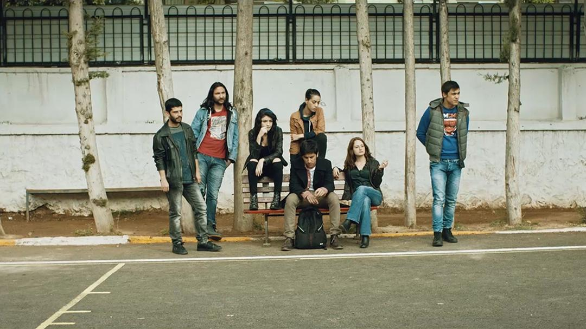

KAR
Dram / TÜRKİYE / 100dkYönetmen: Emre Erdoğdu
Oyuncular: Doğaç Yıldız, Hazar Ergüçlü, Ümit Çırak, Ozan Uygun, Halil İbrahim Babür
Görüntü Yönetmeni: Ercan Küçük
Senaryo: Emre Erdoğdu
Kurgu: Ayris Alptekin
Yapımcı: Emre Erdoğdu, Ercan Küçük
Yapım Şirketi: Rementad Film
Müzeyyen, toplumsal ahlak çizgisinin altında yaşayan genç bir
kadındır. Kavgaya, uyuşturucuya bezenmiş hayatını kendine benzeyen
arkadaşlarıyla paylaşıyordur. Kardeşi Ali onun varlığını yeni
öğrenmiş, onunla t anışmaya Bolu’dan kendi burjuva, başarılı eğitim
hayatını yarıda bırakıp Antalya’ya gelmiştir. Meşru çocuk Ali
sınanmadığı günahlarla, gayr-i meşru çocuk Müzeyyen ise Ali’nin
getirdiği umutla imtihan olacaktır.
Trailer